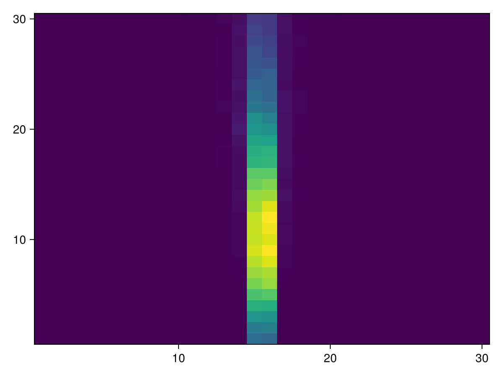

Extended/RE03 Example
This example demonstrates how to use UI-command base scoring. Its create parallel world(s) for defining scoring mesh(es).
Due to some performance overhead, this functionality is not provided by default. To enable it, you need to set the parameter scores in G4JLApplication with a list of scorers
The geometry consists of one water box in the world volume filled by air. Particle gun shoots a gamma into the water box. The physics list is taken from referenced physics-list FTFP_BERT` in Geant4.
You can also download this example as a Jupyter notebook and a plain Julia source file.
Table of contents
- Loading the necessary Julia modules
- Define Detector structure
- Particle Gun initialization
- Scoring Setup
- Create the Application
- Configure, Initialize and Run
- Do a run and get the scoring results
- Access the scoring results
- Plot the scoring results
Loading the necessary Julia modules
Load the Geant4, Geant4.PhysicalConstants and Geant4.SystemOfUnits modules. In addition we will use the Parameters module to handle the parameters of the detector. We will also use the FHist and Plots modules to handle the histograms and plots.
using Geant4
using Geant4.SystemOfUnits
import DisplayAs: PNGDefine Detector structure
The RE03 detector is a simple box filled with air. The detector is defined by the RE03Detector structure. We include the RE03Detector.jl file not to clutter the example.
include(joinpath(@__DIR__, "RE03Detector.jl"))Particle Gun initialization
particlegun = G4JLGunGenerator(particle = "e-",
energy = 1GeV,
direction = G4ThreeVector(0,0,1),
position = G4ThreeVector(0,0,-1.01m))Geant4.G4JLGunGenerator("ParticleGun", Geant4.G4JLParticleGunData(nothing, "e-", G4ThreeVector(0.0,0.0,1.0), G4ThreeVector(0.0,0.0,-1010.0), 1000.0), Geant4.var"#init#19"(), Geant4.var"#gen#20"(), Geant4.G4JLGeneratorAction[])Scoring Setup
In this example, we define a scoring mesh that will score the energy deposit and the number of steps of gamma, e- and e+ particles. We do not use the UI interface to define the scoring mesh, instead we define it in the Julia code by instantiating a G4JLScoringMesh object.
sc1 = G4JLScoringMesh("boxMesh_1",
BoxMesh(1m,1m,1m),
bins = (30, 30, 30),
quantities = [ energyDeposit("eDep")
nOfStep("nOfStepGamma", filters=[ParticleFilter("gammafilter", "gamma")])
nOfStep("nOfStepEMinus", filters=[ParticleFilter("eMinusFilter", "e-")])
nOfStep("nOfStepEPlus", filters=[ParticleFilter("ePlusFilter", "e+")])
]
);Create the Application
app = G4JLApplication(;detector = RE03Detector(), ## detector with parameters
generator = particlegun, ## primary particle generator
nthreads = 4, ## number of threads (MT)
physics_type = FTFP_BERT, ## what physics list to instantiate
scorers = [sc1] ## list of scorers
);
**************************************************************
Geant4 version Name: geant4-11-02-patch-01 [MT] (16-February-2024)
<< in Multi-threaded mode >>
Copyright : Geant4 Collaboration
References : NIM A 506 (2003), 250-303
: IEEE-TNS 53 (2006), 270-278
: NIM A 835 (2016), 186-225
WWW : http://geant4.org/
**************************************************************
Configure, Initialize and Run
configure(app)
initialize(app)
beamOn(app, 0)--- G4CoupledTransportation is used
.... G4ScoringMessenger::MeshBinCommand - G4ScoringBox
G4ScoringManager has 1 scoring meshes.
G4ScoringBox : boxMesh_1 --- Shape: Box mesh
Size (x, y, z): (100, 100, 100) [cm]
# of segments: (30, 30, 30)
displacement: (0, 0, 0) [cm]
registered primitve scorers :
0 eDep
1 nOfStepGamma with gammafilter
2 nOfStepEMinus with eMinusFilter
3 nOfStepEPlus with ePlusFilter
G4WT1 > .... G4ScoringMessenger::MeshBinCommand - G4ScoringBox
G4WT0 > .... G4ScoringMessenger::MeshBinCommand - G4ScoringBox
G4WT3 > .... G4ScoringMessenger::MeshBinCommand - G4ScoringBox
G4WT2 > .... G4ScoringMessenger::MeshBinCommand - G4ScoringBox
G4WT0 > G4ScoringManager has 1 scoring meshes.
G4WT0 > G4ScoringBox : boxMesh_1 --- Shape: Box mesh
G4WT1 > G4ScoringManager has 1 scoring meshes.
G4WT0 > Size (x, y, z): (100, 100, 100) [cm]
G4WT0 > # of segments: (30, 30, 30)
G4WT0 > displacement: (0, 0, 0) [cm]
G4WT1 > G4ScoringBox : boxMesh_1 --- Shape: Box mesh
G4WT0 > registered primitve scorers :
G4WT0 > 0 eDep
G4WT1 > Size (x, y, z): (100, 100, 100) [cm]
G4WT0 > 1 nOfStepGamma with gammafilter
G4WT1 > # of segments: (30, 30, 30)
G4WT3 > G4ScoringManager has 1 scoring meshes.
G4WT1 > displacement: (0, 0, 0) [cm]
G4WT3 > G4ScoringBox : boxMesh_1 --- Shape: Box mesh
G4WT0 > 2 nOfStepEMinus with eMinusFilter
G4WT3 > Size (x, y, z): (100, 100, 100) [cm]
G4WT2 > G4ScoringManager has 1 scoring meshes.
G4WT3 > # of segments: (30, 30, 30)
G4WT2 > G4ScoringBox : boxMesh_1 --- Shape: Box mesh
G4WT0 > 3 nOfStepEPlus with ePlusFilter
G4WT3 > displacement: (0, 0, 0) [cm]
G4WT3 > registered primitve scorers :
G4WT1 > registered primitve scorers :
G4WT2 > Size (x, y, z): (100, 100, 100) [cm]
G4WT1 > 0 eDep
G4WT2 > # of segments: (30, 30, 30)
G4WT2 > displacement: (0, 0, 0) [cm]
G4WT1 > 1 nOfStepGamma with gammafilter
G4WT2 > registered primitve scorers :
G4WT1 > 2 nOfStepEMinus with eMinusFilter
G4WT1 > 3 nOfStepEPlus with ePlusFilter
G4WT2 > 0 eDep
G4WT3 > 0 eDep
G4WT2 > 1 nOfStepGamma with gammafilter
G4WT3 > 1 nOfStepGamma with gammafilter
G4WT3 > 2 nOfStepEMinus with eMinusFilter
G4WT2 > 2 nOfStepEMinus with eMinusFilter
G4WT3 > 3 nOfStepEPlus with ePlusFilter
G4WT2 > 3 nOfStepEPlus with ePlusFilter
Do a run and get the scoring results
beamOn(app,1000)
println("done with run!!!")done with run!!!
Access the scoring results
This is done by accessing the eDep field of the G4JLScoringMesh object sc1, or by accessing the fields nOfStepGamma, nOfStepEMinus or nOfStepEPlus. Each of each of these fields returns a tuple with the scoring results (mean, mean², N) organized in a 3-dimensional matrix with the defined number of bins.
t, t2, n = sc1.eDepBase.Generator{Tuple{Symbol, Symbol, Symbol}, Geant4.var"#13#14"{Tuple{Int64, Int64, Int64}, CSV.File}}(Geant4.var"#13#14"{Tuple{Int64, Int64, Int64}, CSV.File}((30, 30, 30), CSV.File("/tmp/jl_mR0FkjgR6V"):
Size: 27000 x 6
Tables.Schema:
:iX Int64
:iY Int64
:iZ Int64
:total Float64
:total2 Float64
:entry Int64), (:total, :total2, :entry))Lets see the dimensions of the scoring results
println("Dimensions of the scoring results: $(Base.size(t))")Dimensions of the scoring results: (30, 30, 30)
Print the total energy deposit
println("Total EDep = $(sum(t))")
println("Central EDep = $(sum(t[10:20,10:20,:]))")Total EDep = 852631.3642208041
Central EDep = 846036.9653563595
Plot the scoring results
We will use the CairoMakie package to plot the scoring results. We will plot the energy deposit in the center of the scoring mesh.
using CairoMakie
img = heatmap(t[1:30,15,1:30])
PNG(img)
This page was generated using Literate.jl.